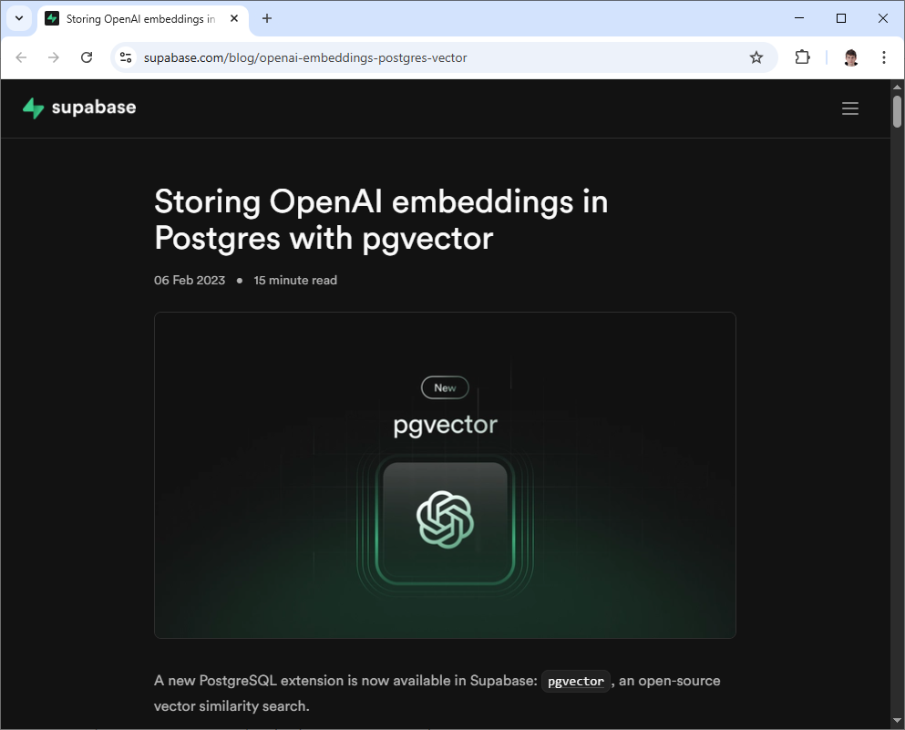
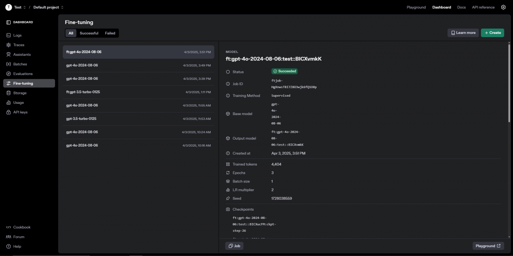
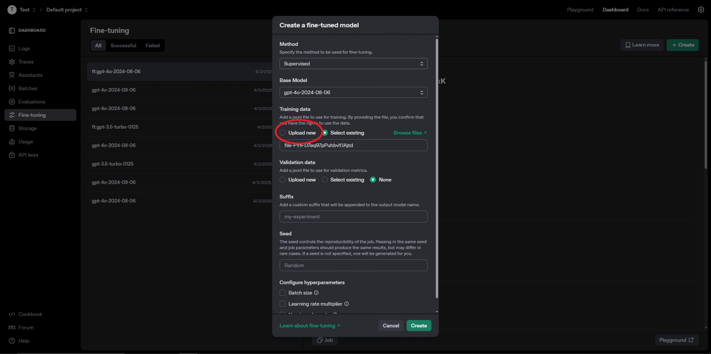
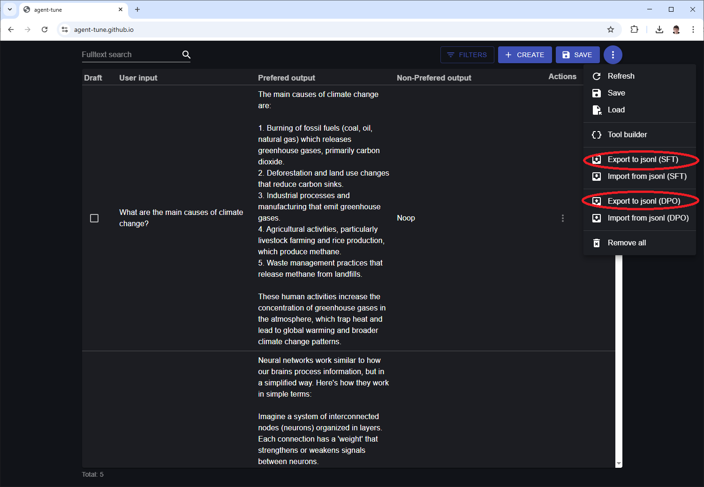
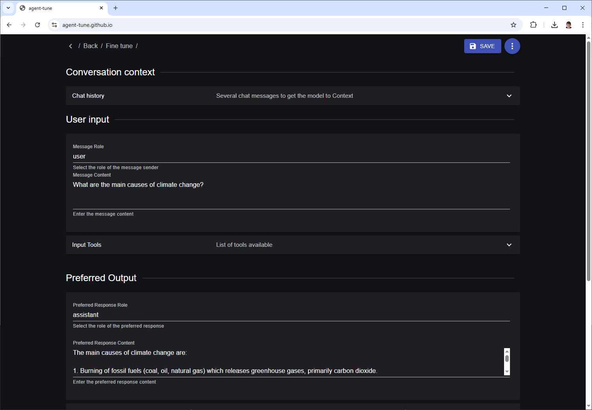
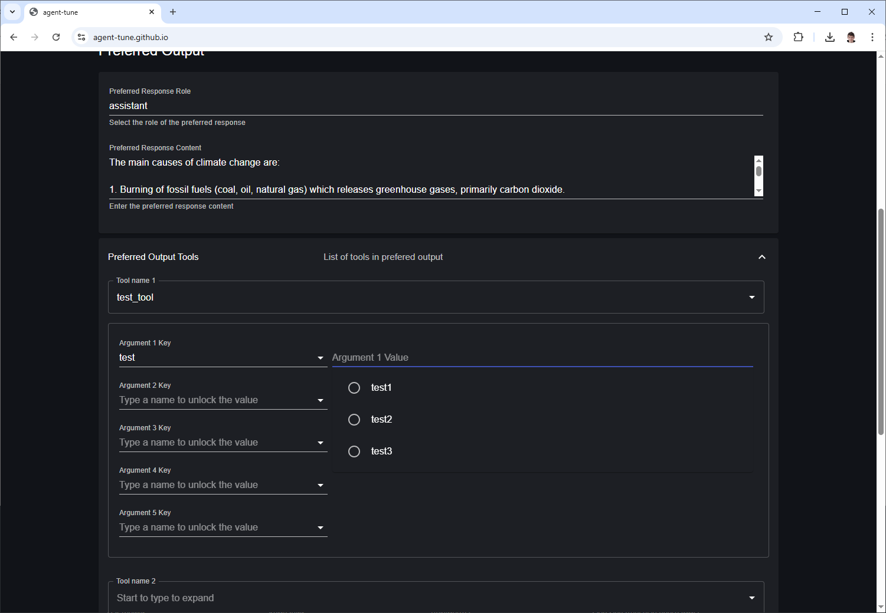
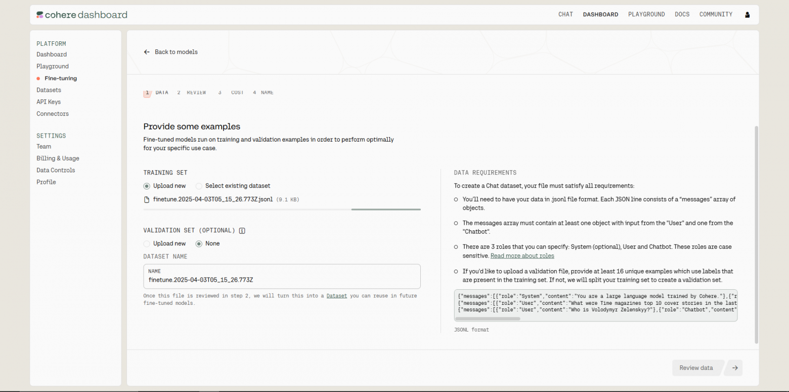

In job postings for LLM engineers, the term "RAG" often appears. This implies integration with an external database, such as PostgreSQL with PGVector or MongoDB Atlas Vector Search.

Caption: https://supabase.com/blog/openai-embeddings-postgres-vector
This approach has a significant drawback: such data stores require programming. As a result, salaries range from $3,500 to $6,500 per month, accompanied by endless debates about whether AI will replace programmers.
Instead of integrating non-AI tools, you can create a company product database by fine-tuning a model. Technically, this is akin to compiling the necessary dataset into a binary by rebuilding the project.

Caption: https://platform.openai.com/finetune/
The model is fine-tuned using segments of user dialogues. To start, you can create a Q&A list; later, you can add conversation segments from a production chatbot to the dataset. There are two methods to fine-tune a model:
Supervised Fine-Tuning (SFT)
The training sample is provided as a jsonl file—a concatenation of multiple json files. Each conversation segment must include at least one user question and one chatbot response.
{
"messages": [
{
"role": "user",
"content": "What are the main causes of climate change?"
},
{
"role": "assistant",
"content": "The main causes of climate change are:\n\n1. Burning of fossil fuels (coal, oil, natural gas) which releases greenhouse gases, primarily carbon dioxide.\n2. Deforestation and land use changes that reduce carbon sinks.\n3. Industrial processes and manufacturing that emit greenhouse gases.\n4. Agricultural activities, particularly livestock farming and rice production, which produce methane.\n5. Waste management practices that release methane from landfills.\n\nThese human activities increase the concentration of greenhouse gases in the atmosphere, which trap heat and lead to global warming and broader climate change patterns."
}
]
}
Direct Preference Optimization Fine-Tuning (DPO)
Similar to SFT, but it includes an undesirable response obtained from the language model (see non_preferred_output).
{
"input": {
"messages": [
{
"role": "user",
"content": "What are the main causes of climate change?"
}
],
"tools": [],
"parallel_tool_calls": true
},
"preferred_output": [
{
"role": "assistant",
"content": "The main causes of climate change are:\n\n1. Burning of fossil fuels (coal, oil, natural gas) which releases greenhouse gases, primarily carbon dioxide.\n2. Deforestation and land use changes that reduce carbon sinks.\n3. Industrial processes and manufacturing that emit greenhouse gases.\n4. Agricultural activities, particularly livestock farming and rice production, which produce methane.\n5. Waste management practices that release methane from landfills.\n\nThese human activities increase the concentration of greenhouse gases in the atmosphere, which trap heat and lead to global warming and broader climate change patterns."
}
],
"non_preferred_output": [{ "role": "assistant", "content": "Noop" }]
}
Unlike programmable RAG stores, filling conversation examples doesn’t require programmers. It’s enough to create a workspace that allows filling a jsonl file using a mouse and keyboard, without needing VSCode.

Caption: https://platform.openai.com/finetune/
Notably, OpenAI’s admin panel automates file selection, validation, and training termination in a GUI: simply drag a jsonl file onto the site. By the way, GPT-4o performs faster than GPT-3.5-Turbo after fine-tuning. Keep this in mind when following this guide.

Caption: https://agent-tune.github.io/
A potentially cheap intern can fill such jsonl files on the site https://agent-tune.github.io/.

Caption: https://agent-tune.github.io/
The tool supports filling two jsonl formats for fine-tuning: both SFT and DPO. It also allows adjusting tool-calling behavior, including autocompletion for enum values during data entry.

Caption: https://agent-tune.github.io/
Besides OpenAI, other cloud LLM providers exist. One of them is Cohere, a company specializing in internal corporate language models.

Caption: https://dashboard.cohere.com/fine-tuning/create
However, after fine-tuning, this cloud provider disables tool-calling for the model. Nevertheless, it can still be used as a corporate wiki, connected to other models via tool calls from their side.
import {
Adapter,
addAgent,
addWiki,
addCompletion,
addSwarm,
addTool,
commitToolOutput,
question,
getLastUserMessage,
execute,
} from "agent-swarm-kit";
import { singleshot, str } from "functools-kit";
import OpenAI from "openai";
import { CohereClient } from "cohere-ai";
const getOpenAI = singleshot(
() => new OpenAI({ apiKey: process.env.OPENAI_API_KEY })
);
const getCohere = singleshot(
() =>
new CohereClient({
token: process.env.COHERE_API_KEY,
})
);
export enum CompletionName {
OpenaiCompletion = "openai_completion",
}
export enum WikiName {
PharmaWiki = "pharma_wiki",
}
export enum AgentName {
TestAgent = "test_agent",
}
export enum ToolName {
FindPharmaProduct = `find_pharma_product`,
}
export enum SwarmName {
TestSwarm = "test_swarm",
}
addCompletion({
completionName: CompletionName.OpenaiCompletion,
getCompletion: Adapter.fromOpenAI(getOpenAI()),
});
addWiki({
wikiName: WikiName.PharmaWiki,
docDescription:
"A comprehensive wiki containing pharmaceutical product information, company policies, and detailed knowledge base for agents.",
getChat: async ({ message }) => {
const client = getCohere();
const { text } = await client.chat({
model: "", // Name of your model after fine-tuning
message,
});
return text;
},
});
addAgent({
docDescription:
"An intelligent agent designed to assist users with pharmaceutical product inquiries, providing consultations and tool support.",
agentName: AgentName.TestAgent,
completion: CompletionName.OpenaiCompletion,
prompt: str.newline(
"You are the pharma seller agent.",
"Provide me the consultation about the pharma product",
"Call the tools only when necessary, if not required, just speak with users"
),
system: [`To find a product information call the next tool: ${ToolName.FindPharmaProduct}`],
tools: [ToolName.FindPharmaProduct],
wikiList: [WikiName.PharmaWiki],
});
addTool({
docNote:
"This tool queries the PharmaWiki for detailed product information based on user questions and returns relevant data to the agent.",
toolName: ToolName.FindPharmaProduct,
call: async ({ toolId, clientId, agentName, params }) => {
console.log(ToolName.FindPharmaProduct, params);
const answer = await question(
await getLastUserMessage(clientId),
clientId,
agentName,
WikiName.PharmaWiki
);
await commitToolOutput(
toolId,
`Received the next information from wiki: ${answer}`,
clientId,
agentName
);
await execute(
`Tell me the answer based on the last tool output`,
clientId,
agentName
);
},
type: "function",
function: {
name: ToolName.FindPharmaProduct,
description: "Find pharma product details based on corporate wiki",
parameters: {
type: "object",
properties: {
context: {
type: "string",
description: `Question context in addition to the last user message`,
},
},
required: [],
},
},
});
addSwarm({
docDescription:
"A collaborative swarm containing multiple pharmaceutical consultation agents working together to assist users effectively.",
swarmName: SwarmName.TestSwarm,
agentList: [AgentName.TestAgent],
defaultAgent: AgentName.TestAgent,
});